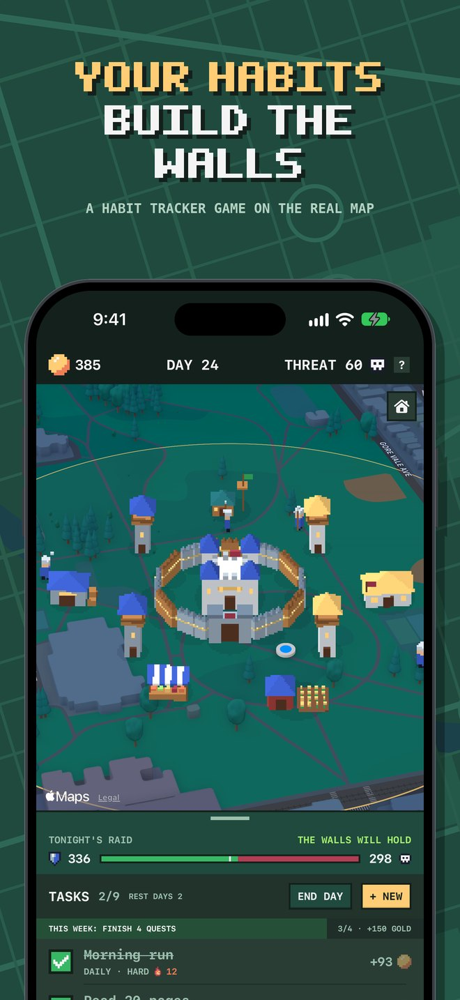

Your habits build the walls
Dawnhold is a habit tracker played as a strategy game on the real map of your neighbourhood. Tick off the day's tasks to earn gold and rally defenders. At midnight the raiders come.

The game in short
- Add the tasks and habits you want to hold yourself to. Each one you finish pays gold and adds defense for the night.
- Build a keep, walls and towers on the real map, at home or anywhere you like.
- Walk to quests at real places nearby. Arrive, and the quest is done.
- Works with Apple Health: steps and calories finish quests by themselves.
- No account, no ads, no tracking.
Support
Questions, problems or ideas? Write to purwalbsn@gmail.com. Say which iPhone and which version of iOS you have, and what you were doing when it went wrong.
Common questions
How does the game work?
The full guide is in the app: press the ? in the top bar. It explains tasks, the night, building, quests, the army and outposts, one topic at a time.
A quest doesn't finish when I get there
A quest is done when you are inside its green ring, which reaches 100 m (330 ft) out from the place. You never have to stand on the spot itself.
If nothing happens, open the app so it can read where you are, and check that Dawnhold may use your location: Settings, Privacy & Security, Location Services, Dawnhold. With "Always" allowed, quests finish while the phone is in your pocket. With "While Using" they finish when the app is open.
My steps or calories aren't counted
Press CONNECT in the Quests list to let the game read from Apple Health. If you said no earlier, turn it on in the Health app: your picture, Apps, Dawnhold. Stand hours need an Apple Watch. The game only reads these counts. It never writes to Health.
I got a new phone. Where is my game?
The game is kept in your own iCloud. Sign in with the same Apple Account, make sure iCloud is on, and open Dawnhold: it says GAME RESTORED FROM ICLOUD when the copy arrives, which can take a moment. A game already played for a night or more on the new phone is never replaced.
I don't get reminders
Allow notifications for Dawnhold in Settings, Notifications. The game then reminds you in the evening when the walls won't hold and tells you in the morning how the night went.
Can I see miles instead of kilometres?
Distances follow your phone. Change it under Settings, General, Language & Region, Measurement System.